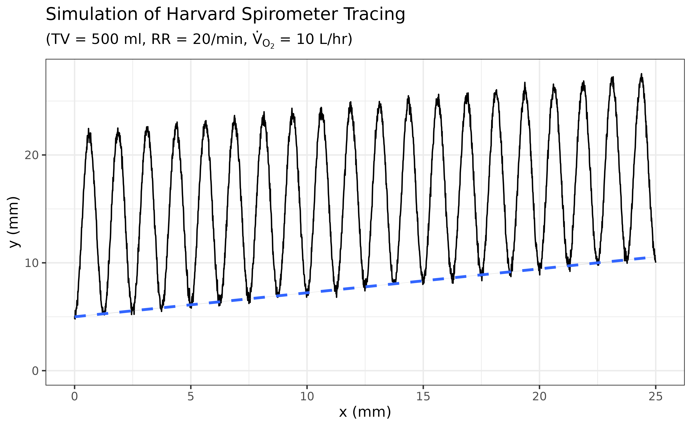

rslab.RmdSpirometry test is a procedure that measures lung volumes and air flow parameters which calculate from inspiratory and expiratory gas volumes of a human subject.
The gas volumes/flows obtained by the spirometer are in ATPS (Ambient Temperature and Pressure Saturated) conditions which its volumes also depends on environmental conditions including room temperature.
The obtained volumes/flows must be converted to gas condition in BTPS (Body Temperature, Pressure, water vapor Saturated) which gives more accurate representation of actual volumes/flows within the lungs.
BTPS correction factor is a coefficient used to convert flow and volume measured at ambient conditions (ATPS) to the conditions within the lungs (BTPS).
get_btps_factor() is a function to obtain the BTPS correction factor.
# BTPS correction factor at room temperature = 27 degree celsius
btps_factor27 <- get_btps_factor(temp = 27)
btps_factor27
#> [1] 1.063If Tidal Volume (TV) was measured as 500 ml at room temperature of 27 degree celsius, the TV in the lung at BTPS (body temperature, pressure, water vapor saturated) would be:
# TV (ml) at BTPS
500 * btps_factor27
#> [1] 531.5If you want to convert several lung volumes or flow (from ATPS to BTPS), use lung_vol_atps_btps() and the result will be shown as a tibble.
lung_vol_atps_btps(
temp = 27,
FEV1 = 3.5,
FVC = 4.5,
PEF = 450,
TV = 0.5,
IC = 2.5,
EC = 2.5,
VC = 4.5
)
#> # A tibble: 10 × 4
#> Parameter ATPS BTPS Unit
#> <chr> <dbl> <dbl> <chr>
#> 1 FEV1 3.5 3.72 L
#> 2 FVC 4.5 4.78 L
#> 3 FEV1/FVC 77.8 82.7 %
#> 4 PEF 450 478. L/min
#> 5 TV 0.5 0.532 L
#> 6 IC 2.5 2.66 L
#> 7 IRV 2 2.13 L
#> 8 EC 2.5 2.66 L
#> 9 ERV 2 2.13 L
#> 10 VC 4.5 4.78 LIn a laboratory experiment using Harvard Spirometer, this package provides functions to calculate metabolic rate and oxygen consumption by input a displacement in x-and y-direction of Harvard spirometer tracing, height and weight of the subject, and environmental conditions which are temperature and barometric pressure.
In Harvard spirometer tracing, horizontal direction (x-direction) represents time (default paper speed = 25 mm/min) whereas vertical direction (y-direction) represents usage of oxygen (1 mm = 30 ml of oxygen). With a little bit of calculation, we can derived an oxygen consumption in unit of L/hr in the ATPS condition (Ambient Temperature and barometric Pressure Saturated with water vapor condition).
You can use get_oxycons() to calculate oxygen consumption and it will also provide other info printed to R console as well.
oxycons <- get_oxycons(x = 15, # displacement in x-direction = 15 mm
y = 80, # displacement in y-direction = 80 mm
paper_speed = 25 # Paper speed of the kymograph = 25 mm/min
)
#> Harvard spirometer tracing:
#> - Paper speed = 25 mm/min
#> - Time interval = 0.6 min (horizontal displacement = 15 mm)
#> - Volume change = 2400 ml (vertical displacement = 80 mm)
#>
#> Oxygen Consumption at ATPS = 240 L/hrTo calculate metabolic rate, we must first convert oxygen consumption \(\dot{V}_{o_2}\) at ATPS to STPD (Standard Temperature of 0°C and a barometric Pressure of 760 mmHg, and in a Dry state).
STPD correction factor can be used to convert gas in ATPS to BTPS condition. It has a linear relationship with barometric pressure and temperature.
Therefore, get_STPD_factor() can be used to predict STPD factor using baro and temp_c as predictors. (It use multiple linear regression model behind the scene.)
stpd_760_25 <- get_STPD_factor(
baro = 760, # Barometric pressure at the recording site.
temp_c = 25 # Temperature in celsius at the recording site.
)
#> STPD correction factor = 0.883 (760 mmHg, 25 degree celcius)Correction can be made by multiply oxygen consumption \(\dot{V}_{o_2}\) at ATPS to STPD correction factor.
oxycons * stpd_760_25 # Unit in L/hr
#> [1] 211.9386Finally, metabolic rate can be calculated by times an oxygen consumption \(\dot{V}_{o_2}\) (L/hr) at STPD to a caloric equivalent of oxygen (Cal/hr) divided by Body Surface Area (BSA) in m2, which can be calculated by DuBois & DuBois formula (DuBois D, DuBois EF)
\[
Met \ Rate \ (Cal/m^2/hr) = \frac{ \dot{V}_{o_2} (L/hr) \times CalEqi \ O_2 \ (Cal/hr)}{ BSA \ (m^2) }
\]
get_metabolic_rate() is a final wrapper function that calculate metabolic rate; moreover, it also reports metabolic rate along with oxygen consumption and other related parameters printed to the R console.
get_metabolic_rate(x = 15, # displacement in x-direction = 15 mm
y = 80, # displacement in y-direction = 80 mm
paper_speed = 25, # Paper speed of the kymograph = 25 mm/min
baro = 760, # Barometric pressure at the recording site.
temp_c = 25, # Temperature in celsius at the recording site.
wt_kg = 70, # Subject's weight in kilogram
ht_cm = 180, # Subject's height in centimetre
cal_eqi_oxygen = 4.825 # Caloric equivalent of Oxygen at RQ = 0.82
)
#> Harvard spirometer tracing:
#> - Paper speed = 25 mm/min
#> - Time interval = 0.6 min (horizontal displacement = 15 mm)
#> - Volume change = 2400 ml (vertical displacement = 80 mm)
#>
#> Oxygen Consumption at ATPS = 240 L/hr
#>
#> Metabolic rate calculation:
#> - STPD correction factor = 0.883 (760 mmHg, 25 degree celcius)
#> - Oxygen Consumption at STPD = 211.939 L/hr (0.883 x 240 L/hr)
#> - Caloric equivalent of Oxygen = 4.825 Cal/L of Oxygen
#> - BSA = 1.886 square metre (wt = 70 kg, ht = 180 cm)
#>
#> Metabolic Rate = 542.128 Cal/m2/hr
#>
#> In this section, contrary to the previous, we will simulate data to plot Harvard spirometer tracing from the respiratory parameters.
sim_Harvard_tracing() is the function to simulates volume-time tracing data produced by breathing of a hypothetical subject as recorded by the Harvard spirometer.
The input parameters can be categorized into the followings:
Function to Simulate 1 Respiratory Cycle: as supply by the argument f, the default, currently, is a cosine (cos) function which might give a rough representation of 1 respiratory cycle. (It is not a physiologic representation of respiratory waveform. I still need more research on this.)
Amplitude and Wavelength of the sinusoidal function: this can be calculated by knowing the Respiratory Rate (RR), Tidal Volume (TV), and paper speed (paper_speed)
Slope and Y-intercept of an Oxygen Line: the oxygen line, i.e., the linear line fitted from the lowest points of each respiratory waveform, can be simulated by knowing its slope (\(\beta_1\)), y-intercept (\(\beta_0\)), and random error term (\(\epsilon\)).
oxycons) and paper speed (paper_speed).sd as specified.
tracing_df <- sim_Harvard_tracing(
f = "cos", # Cosine function to represent 1 respiratory cycle
t_start = 0, # First `x` value will be started at time = 0 minute
t_end = 1, # Last `x` value will be ended at time = 1 minute
paper_speed = 25, # Paper speed in mm/minute
y_int_O2_line = 5, # Y-intercept of an oxygen line
oxycons = 10, # Oxygen consumption is 10 L/hr (default unit)
TV = 500, # Tidal Volume is 500 ml
RR = 20, # Respiratory Rate is 20 /min
seq_x_by = 0.01, # This control resolution of simulated data
epsilon_sd = 0.3, # Add random variation sampled from Gaussian distribution with mean = 0, sd = 0.3
seed = 1, # Seed to generate the random variation
)
head(tracing_df)
#> x y y_O2_line
#> 1 0.00 4.812064 4.812064
#> 2 0.01 5.067841 5.057315
#> 3 0.02 4.795831 4.753756
#> 4 0.03 5.579820 5.485251
#> 5 0.04 5.275616 5.107741
#> 6 0.05 5.026778 4.764971With a little help of ggplot2 package, the tracing can then be visualized.
ggplot(tracing_df) +
geom_path(aes(x, y)) +
geom_smooth(aes(x, y_O2_line), method = "lm", formula = "y~x",
linetype = "dashed") +
expand_limits(y = 0) +
labs(title = "Simulation of Harvard Spirometer Tracing",
subtitle = TeX("(TV = 500 ml, RR = 20/min, $\\dot{V}_{O_2}$ = 10 L/hr)"),
x = "x (mm)", y = "y (mm)")
To be more explicit, I will provide an underlying mathematical formula that produces data to simulate Harvard spirometer tracing in the following sections.
The goal here is to build a function that yields an output:
from inputs:
\(x\) = x-axis values (mm)
\(V_T\) = Tidal Volumes (ml)
\(f_R\) = Respiratory Rate (cycle/min)
\(\dot{V}_{O_2}\) = Oxygen consumption (L/hr)
\(v_{paper}\) = Paper Speed (mm/min)
\(y\) can be decomposed into the sum of its 2 components: the respiratory waveform (\(y_{wave}\)) and the linear components (\(y_{lin}\)) which is the oxygen line.
\[ y = y_{wave} + y_{lin} \]
Next, I will provide methods to build \(y_{wave}\) and then \(y_{lin}\).
For simplicity, let’s assume that 1 respiratory wave can be generated by using trigonometric sinusoidal function. In this case I will use the cosine function cos().
Thus, the respiratory waveform can be written as:
\[ y_{wave} = A \times cos(\frac{2\pi x}{\lambda}) \]
Where:
Given that 1 mm in the y-axis = 30 ml.
Amplitude (\(A\)) can be expressed in terms of tidal volume (\(V_T\)) in ml.
\[ A = \frac{-TV}{2 \times 30} \]
\(2\) was included in the denominator because amplitude equals to the half of tidal volume, and the minus sign was added to flip the cosine function horizontally.